大家好，我是炎拳。
Unity DOTS从发布到现在已经过去两年了，虽然距离发布正式版依旧遥遥无期，但官方放出的几个案例所展现出的性能仍然令人神往，然而DOTS 相关package不同版本变动很大，许多老的教程也已经过时，给想要探索的小伙伴制造了不少麻烦。
于是我便尝试上手最新的DOTS，制作了这样一个由42804把飞剑组成的炫酷剑阵，每次点击地板，都会有10000把飞剑飞出大阵攻击目标点后返回。算是致敬了古龙小说中的剑气纵横三万里 ，一剑光寒十九洲的光景（笑）。本文将制作过程和学习经历分享出来，希望能给同样探索DOTS的小伙伴一些参考。
文章较长，对准备工作没兴趣的小伙伴直接跳到目录5
创建工程 首先我们下载好 Unity 2020.3.3f1，选择 Universal Render Pipeline 创建工程。
DOTs的相关package并未发布，也无法在 Package Manager中搜索到，我们需要手动去下载这几个包。
下载Dots相关包 打开上方菜单栏，点击在左上角＋号图标选择Add package from git URL，依次输入：
com.unity.entities
com.unity.rendering.hybrid
com.unity.physics
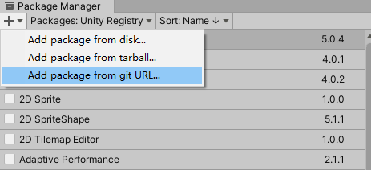
等待一会儿包就下载好了，但我们的准备工作还没做完。
动态合批设置 由于我们将要生成大量相同材质的飞剑，所以将他们合批处理降低Drawcall是有必要的。
首先点击Edit >ProjectSetting>Quality>查看当前使用的Rendering设置文件，关闭SRP Batcher：
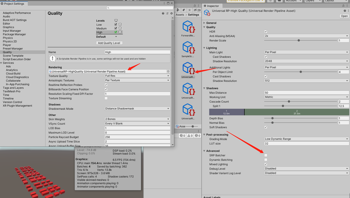
再新建一个材质，勾选Enable GPU Instancing:
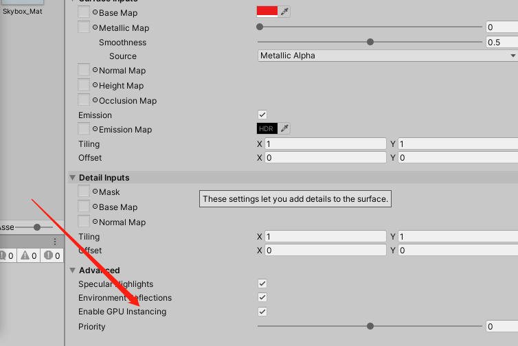
你就会发现Unity将拥有同一此材质的物体合批渲染了：
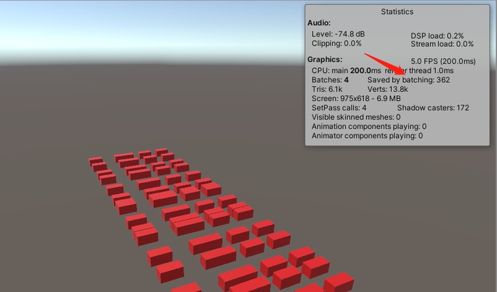
值得一提的是，本工程中的飞剑已经被我用Blender手动将顶点数降低到105个了，因为我最后大致要生成4万把飞剑，原本的飞剑模型有上千个顶点，庞大的定点数会导致我的场景近乎卡死，最后测试我的电脑能顶住的最大顶点数大概是10M左右。
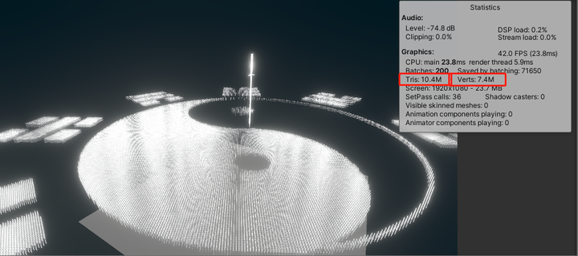
制作飞剑发光效果 我希望每把飞剑都有一个发出淡淡光晕的效果，在2020.3.3版本的URP工程中，Unity已将Post Processing Package默认置入，所以我们无需像老版本一样去自己下载Post-Processing package包。直接使用就可以了。
首先新建一个材质球，勾选了Emission后扔给飞剑，并在场景中右键新建一个Global Volume：
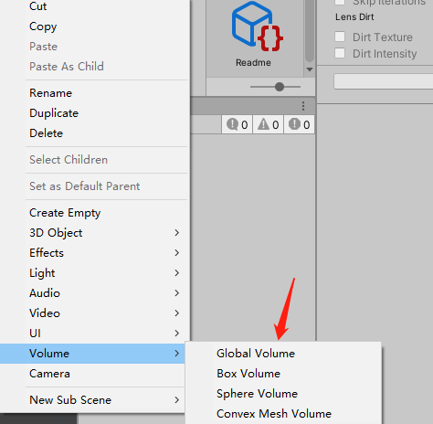
同时点击主相机，勾选solider color，选择一个偏黑色的颜色，再将Post processing勾选上：
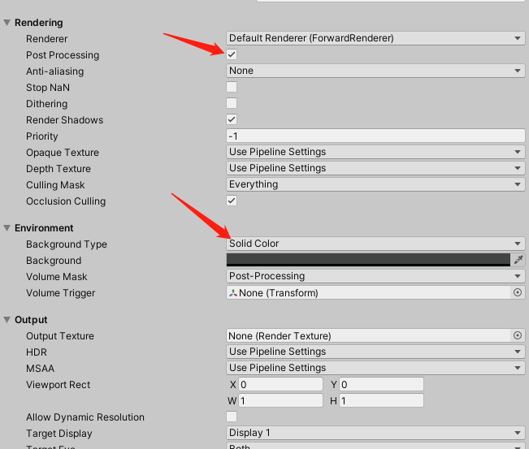
我们的场景中不需要天空盒，所以点击Window>Rendering>Lighting>Environment，将天空盒材质设置为None：
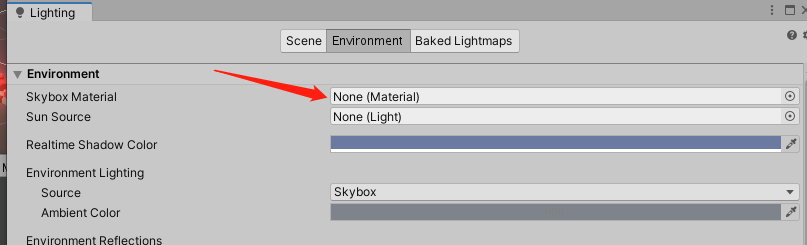
最后我希望后处理效果只对指定层级的物体起作用，这里需要Global volume和物体设置为相同层级，并且在主相机中指定该层级：
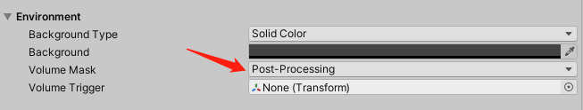
最后新建一个配置文件，点击Add Override，并添加bloom效果即可。
准备工作做完了，终于要进入实践环节了，本文就不赘述DOTS相关的概念了，网上关于DOTS介绍的文章很多，官方文档对于DOTS阐述也算是详尽，这里我放个链接，对DOTS不了解的小伙伴可以先理解了这些概念后再来实践：
生成太极图案的飞剑群实体 首先找到一张太极八卦阵的图案，然后掐太极法印！高呼口诀：
然后就发现图片白色部分都变成透明的了：
接下来我们需要获取图片中每个像素点的位置，然后等比转换到unity空间中去，让飞剑去填充这些位置。所以图片也不能太大，这里我们导入的时候在Unity中设置就好了：
代码如下：
1 2 3 4 5 6 7 8 9 10 11 12 13 14 15 16 17 18 19 20 21 22 23 24 25 26 27 28 29 30 31 32 33 34 35 36 37 38 39 40 41 42 43 44 public SpriteRenderer spriteRenderer; public List<int2> posList; [Header("Drawing" ) ] public int drawDensity ; public int disperseMin; public static GetPixel Instance; private int width; private int height; void Start ( { Instance = this ; width = spriteRenderer.sprite.texture.width; height = spriteRenderer.sprite.texture.height; Debug.Log("图片宽度" + width + "图片高度" + height); GetPixelPos(); } public void GetPixelPos ( { int halfHeight= height / 2 ; int halfWidth = width / 2 ; int2 tempPos; for (int i = 0 ; i < height; i += drawDensity) { for (int j = 0 ; j < width; j += drawDensity) { Color32 c = spriteRenderer.sprite.texture.GetPixel(j, i); tempPos.y = (j-halfHeight)*disperseMin; if (c.a != 0 ) { tempPos.x = (i-halfWidth)* disperseMin; posList.Add(tempPos); } } } }
位置拿到了，接下来需要根据位置生成大量飞剑，并将飞剑转换为Entity，我们可以选择给飞剑的预制体添加Convert To Entity 脚本的方法进行转换：
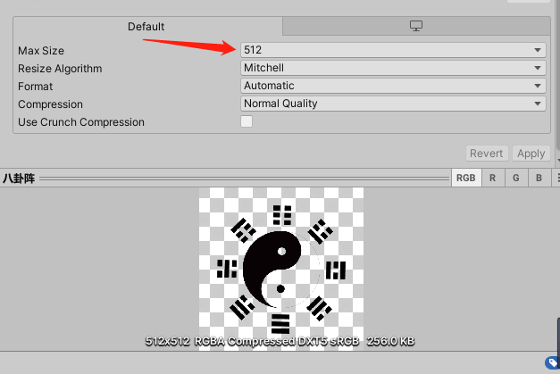
但点开Convert To Entity查看，发现它也是继承了MonoBehaviour，很明显它不会自己在编辑器中转换好，所以我们需要在运行的过程中将飞剑的预制体转换为Entity，代码如下：
1 2 3 4 5 6 7 8 9 10 11 12 13 14 15 16 17 18 19 20 21 22 23 24 25 26 27 28 29 30 31 32 33 34 35 36 37 38 39 40 41 42 43 44 45 46 47 48 49 50 51 52 53 54 55 56 57 58 59 60 61 using Unity.Entities;public class Test : MonoBehaviour { public GameObject swordPrefab; private EntityManager _manager; private BlobAssetStore _blobAssetStore; private GameObjectConversionSettings _settings; private Entity swordEntity; void Start ( { _manager = World.DefaultGameObjectInjectionWorld.EntityManager; _blobAssetStore = new BlobAssetStore(); _settings = GameObjectConversionSettings.FromWorld(World.DefaultGameObjectInjectionWorld, _blobAssetStore); swordEntity = GameObjectConversionUtility.ConvertGameObjectHierarchy(swordPrefab, _settings); } private void OnDestroy ( { _blobAssetStore.Dispose(); } ｝ 再按位置生成飞剑Entity，顺便打印出来飞剑的数量： private void Update ( { if (Input.GetKeyDown(KeyCode.W)) { BurstGenerateSword(); } } public void BurstGenerateSword ( ｛ Debug.Log ("生成数量:" + GetPixel.Instance.posList.Count ; for (int i = 0 ; i < GetPixel.Instance.posList.Count; i++) { SpawnNewSword(GetPixel.Instance.posList[i]); } } public void SpawnNewSword (float2 pos ) { Entity newSword = _manager.Instantiate(swordEntity); Translation ballTrans = new Translation { Value = new float3(pos.x, 0f , pos.y) }; _manager.AddComponentData(newSword, ballTrans); }
再按位置生成飞剑Entity，顺便打印出飞剑的数量：
1 2 3 4 5 6 7 8 9 10 11 12 13 14 15 16 17 18 19 20 21 22 23 24 25 26 27 28 29 private void Update ( { if (Input.GetKeyDown(KeyCode.W)) { BurstGenerateSword(); } } public void BurstGenerateSword ( ｛ Debug.Log ("生成数量:" + GetPixel.Instance.posList.Count ; for (int i = 0 ; i < GetPixel.Instance.posList.Count; i++) { SpawnNewSword(GetPixel.Instance.posList[i]); } } public void SpawnNewSword (float2 pos ) { Entity newSword = _manager.Instantiate(swordEntity); Translation ballTrans = new Translation { Value = new float3(pos.x, 0f , pos.y) }; _manager.AddComponentData(newSword, ballTrans); }
然后运行场景按W，在默认BurstCompliler和Job threads开启的情况下，可以看到飞剑迅速生成到了场景中央，并且没有一点卡顿：
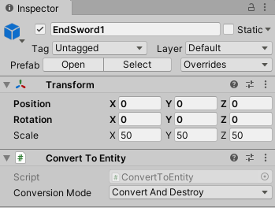
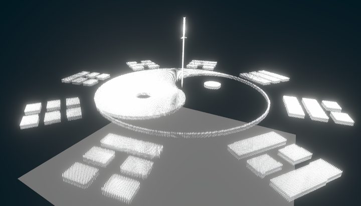
调试Entity 每个Entity是无法显示在Hierarchy视窗中进行调试的，Unity提供了一个工具用来分析，依次点击：Window>Analysis>Entity Debugger，就可以在Entity Debugger中查看每个Entity具体包含的Component，以及对应属性值的变化：
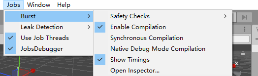
图中我们可以看到，列表长度为42802，但Entity的数量生成了2倍多，这是因为飞剑的预制体中包含一个子物体，转换过程中EntityManager会将物体的子物体一同转换为Entity：
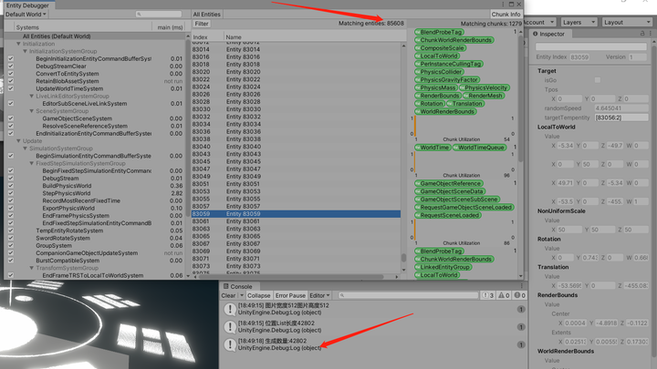
你也可以点击filter，通过筛选Component的方式来寻找想要查看的Entity，左边的系统列表显示了项目中的系统以及系统运行每个框架所花费的时间。你可以使用为每个系统提供的复选框从列表中打开和关闭系统，来进行调试。
剑阵围绕中心旋转 飞剑已经生成了，接下来就需要创建一个System来更新这些Entity，让他们旋转起来。
1 2 3 4 5 using Unity.Entities;[GenerateAuthoringComponent ] public struct SwordTag : IComponentData{}
然后新建一个System，继承SystemBase基类，需要注意的是：JobComponentSystem和ComponentSystem这两个基类将会被摒弃，（Entities 0.17.0 package文档中官方明确已经明确表示），SystemBase将会是System唯一的基类，所以建议尽量使用SystemBase。
接着实现System接口，通过Entitie.ForEach方法筛选出Sword Entity，并更新位置：
1 2 3 4 5 6 7 8 9 10 11 12 13 14 15 16 17 18 19 20 21 22 23 24 25 26 27 28 29 30 31 32 33 34 35 36 37 38 39 40 41 42 using Unity.Entities;using Unity.Jobs;using Unity.Transforms;using Unity.Mathematics;using UnityEngine;public class SwordRotateSystem : SystemBase { protected override void OnUpdate ( { float deltaTime = Time.DeltaTime; float angel = 0.01f ; Entities. WithAll<SwordTag>(). ForEach((ref Translation translation, ref Rotation orientation) => { var rotation = orientation; float3 targetPosition = float3.zero; var targetDir = targetPosition - translation.Value; quaternion temp1 = Quaternion.FromToRotation(Vector3.left, targetDir); orientation.Value = math.slerp(orientation.Value, temp1, deltaTime); #region 飞剑围绕中心点（0,0,0）旋转 float3 pos = translation.Value; quaternion rot = quaternion.AxisAngle(math.up(), angel); float3 dir = pos - float3.zero; dir = math.mul(rot, dir); translation.Value = float3.zero + dir; #endregion }).ScheduleParallel(); } }
Unity ECS会自动在系统中发现继承了SystemBase的类，点击运行场景，飞剑此时已经可以沿中心点旋转了：
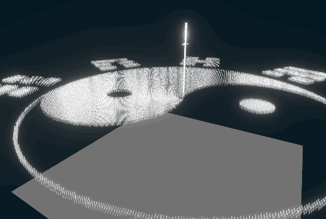
飞剑出阵和归阵 接下来是整个剑阵最核心的功能，在实现的过程中我也实践了两种思路。
第一种思路是：
点击下方广场，获取射线与广场碰撞点的位置，创建Tag2组件如下
1 2 3 4 5 6 7 8 9 10 11 12 using Unity.Entities;using Unity.Mathematics;public struct Tag2 : IComponentData{ public float3 target; public Entity TempEntity; }
创建 System1，在System1中遍历不带Tag2的飞剑，抽取10000把飞剑，添加Tag2，同时创建10000个TempEntity替代其继续旋转。Tag2存取位置和对应Tempentity信息。
创建System2 ，在System2中遍历所有带Tag2的飞剑，令其出阵飞向目标点。
在System2中遍历所有带Tag2的飞剑，当System2中的飞剑非常接近目标点，则移除Tag2，添加Tag3。
创建System3，在System3中遍历所有带Tag3的飞剑归阵，追赶上自己对应的Tempentity，之后销毁掉对应的Tempentity。
这个方案有这样2个问题： System之间执行顺序问题 所有继承SystemBase，实现的OnUpdate（）方法的System都是在主线程上跑的，因此我们可以很方便的规划System1,2,3的执行顺序，代码如下：
1 2 3 4 5 6 7 8 9 10 11 12 [UpdateAfter(typeof(System1)) ] public class System2 : SystemBase { protected override void OnUpdate ( } [UpdateAfter(typeof(System2)) ] public class System3 : SystemBase { protected override void OnUpdate ( }
EntityCommandBuffer时序问题 在ECS中，所有的Entity都是按块（Chunk）存储的，一个块里的所有实体必定拥有相同数量和类型的组件，一旦某个实体的组件数量或类型改变了，它就不属于当前的块，它会被移到其他块里，这个操作在主线程中运行并没有什么问题。
但我希望能发挥cpu全部的性能来运行这个剑阵，所以需要去分配一些任务到子线程中执行，JobSystem帮我们解决了这个问题，它屏蔽了直接对线程的操作，而是把异步逻辑封装成一个个“Job”，由引擎来调度和分配给合适的线程去执行，官方实例代码在这：
除了上面的方法使用JobSystem，ECS提供SystemBase类 中常用的Entities.ForEach方法也可以将数据转换到子线程处理，我们可以使用Schedule()或者ScheduleParallel()来执行Job的lambda方法：
1 2 3 4 5 6 7 8 9 10 11 12 13 14 15 16 partial class ApplyVelocitySystem : SystemBase { protected override void OnUpdate ( { Entities .ForEach((ref Translation translation, in Velocity velocity) => { translation.Value += velocity.Value; }).Schedule(); } }
这时候，假设Job1中删除了某个实体的组件，该实体被移到其他chunk，而它并行的Job2也在对这个实体进行操作，就会产生冲突（操作不存在的组件或者操作了错误块里的实体），所以Job2必须等待Job1读写数据完毕，这就是硬性同步点（Sync points）。
以下导致结构变化的操作，都会产生硬性的同步点：
创建实体
删除实体
向实体添加组件
从实体中删除组件
更改共享组件中的值
每个同步点都会都会造成停顿，等待当前World中所有先前安排的作业完成。过多的同步点会让效率大大降低，但以上的操作还是
为了解决这种问题，Unity提供了EntityCommandBuffer（实体命令缓冲区，简称ECB）来解决这个问题。
ECB可以将导致结构性更改的命令排入队列，存储在ECB中的命令可以在一帧中晚些时候回放执行。当回放ECB时，这会将跨帧分布的多个同步点减少到单个同步点。下面这个案例是使用系统自带的ECB，这样可以最大程度的减少同步点：
1 2 3 4 5 6 7 8 9 10 11 12 13 14 15 16 17 18 19 20 21 22 23 24 25 26 27 28 29 30 31 32 33 34 35 36 37 38 39 40 struct Lifetime : IComponentData{ public byte Value; } class LifetimeSystem : SystemBase { EndSimulationEntityCommandBufferSystem m_EndSimulationEcbSystem; protected override void OnCreate ( { base .OnCreate(); m_EndSimulationEcbSystem = World .GetOrCreateSystem<EndSimulationEntityCommandBufferSystem>(); } protected override void OnUpdate ( { var ecb = m_EndSimulationEcbSystem.CreateCommandBuffer().AsParallelWriter(); Entities .ForEach((Entity entity, int entityInQueryIndex, ref Lifetime lifetime) => { if (lifetime.Value == 0 ) { ecb.DestroyEntity(entityInQueryIndex, entity); } else { lifetime.Value -= 1 ; } }).ScheduleParallel(); m_EndSimulationEcbSystem.AddJobHandleForProducer(this .Dependency); } }
这样，飞剑添加Component，创建临时的entity的操作好像都没啥问题了，但实际运行起来时会发现飞剑并没有飞回原定的位置，明显比原先剑阵慢了一帧：
前面也说到了，EntityCommandBuffer中的命令不会立即执行，而是会在下一帧被EntityCommandBufferSystem使用，有一帧延迟。我们生成替代出阵飞剑的entity，在下一帧才会真正的生成并跟随剑阵旋转，所以飞剑最后和entity同步的位置也自然是慢了一帧。目前的解决办法是多计算一帧的距离，但这样做既麻烦又有误差，所以我们换一种简单的思路。
对与EntityCommandBuffer时序问题有疑惑的小伙伴可以看这篇文章：
思路2
生成TempEntity 和飞剑在八卦阵中，为飞剑添加Tag1组件，记录相同位置的TempEntity
1 2 3 4 5 6 7 8 using Unity.Entities;using Unity.Mathematics;public struct Tag1 : IComponentData{ public Entity TempEntity; }
创建System1，遍历所有TempEntity，使它们沿中心旋转。
创建System2，遍历所有无Tag2组件的飞剑，并且每帧和对应TempEntity位置同步。
（System2中执行）若发生点击事件，则抽取10000把飞剑添加Tag2，Tag2记录目标点位置。
1 2 3 4 5 6 7 8 9 using Unity.Entities;using Unity.Mathematics;public struct Tag2 : IComponentData{ public float3 targetpos; }
主要代码如下：
System1：
1 2 3 4 5 6 7 8 9 10 11 12 13 14 15 16 17 18 19 20 21 22 23 24 25 26 27 28 29 30 31 32 using Unity.Entities;using Unity.Jobs;using Unity.Transforms;using Unity.Mathematics;public struct TempEntityTag : IComponentData{}public class TempEntityRotateSystem : SystemBase { protected override void OnUpdate ( { float deltaTime =Time.DeltaTime; float angel = 0.01f ; Entities. WithAll<RotateTag,TempEntityTag>(). ForEach(( ref Translation translation, in Target target) => { #region TempEntity围绕剑阵中心点旋转 float3 pos = translation.Value; quaternion rot = quaternion.AxisAngle(math.up(), angel); float3 dir = pos - target.Tpos; dir = math.mul(rot, dir); translation.Value = target.Tpos + dir; #endregion }).ScheduleParallel(); } }
System2
1 2 3 4 5 6 7 8 9 10 11 12 13 14 15 16 17 18 19 20 21 22 23 24 25 26 27 28 29 30 31 32 33 34 35 36 37 38 39 40 41 42 43 44 45 46 47 48 49 50 51 52 53 54 55 56 57 58 59 60 61 62 63 64 65 66 67 68 69 70 71 72 73 74 75 76 77 78 79 80 81 82 83 84 85 86 87 88 89 90 91 92 93 94 95 96 97 98 99 100 101 102 103 104 105 106 107 108 109 110 111 112 113 114 115 116 117 118 119 120 121 122 123 124 125 126 127 128 129 130 131 132 133 134 135 using Unity.Entities;using Unity.Jobs;using Unity.Transforms;using Unity.Mathematics;using UnityEngine;using Unity.Collections;using Unity.Physics.Systems;using Unity.Physics;[UpdateAfter(typeof(TempEntityRotateSystem)) ] public class SwordRotateSystem : SystemBase { EndSimulationEntityCommandBufferSystem m_EndSimulationEcbSystem; protected override void OnCreate ( { base .OnCreate(); m_EndSimulationEcbSystem = World .GetOrCreateSystem<EndSimulationEntityCommandBufferSystem>(); } protected override void OnUpdate ( { bool isGo = false ; float3 hitpos = float3.zero; float deltaTime = Time.DeltaTime; var ecb = m_EndSimulationEcbSystem.CreateCommandBuffer().AsParallelWriter(); if (Input.GetMouseButtonDown(0 )) { BuildPhysicsWorld physicsWorld = World.DefaultGameObjectInjectionWorld.GetExistingSystem<BuildPhysicsWorld>(); NativeArray<RigidBody> rigidBodies = new NativeArray<RigidBody>(1 , Allocator.TempJob); NativeArray<float3> rayHitPos = new NativeArray<float3>(1 , Allocator.TempJob); UnityEngine.Ray ray = Camera.main.ScreenPointToRay(Input.mousePosition); RaycastJobHandle raycastJonHande = new RaycastJobHandle() { mStartPos = ray.origin, mEndPos = ray.direction * 10000 , physicsWorld = physicsWorld.PhysicsWorld, Bodies = rigidBodies, rayHitpos = rayHitPos }; JobHandle jobHandle = raycastJonHande.Schedule(this .Dependency); jobHandle.Complete(); if (rigidBodies[0 ].Entity != null ) { Debug.Log("目标坐标：" + rayHitPos[0 ]); Debug.Log("射线击中目标" + rigidBodies[0 ].Entity); hitpos = rayHitPos[0 ]; isGo = true ; } rigidBodies.Dispose(); rayHitPos.Dispose(); } Entities. WithAll<SwordTag>(). WithNone<GoTag>(). ForEach((Entity entity, int entityInQueryIndex, ref Translation translation, ref Rotation orientation, ref Target target) => { #region 飞剑群出击！ if (isGo && entityInQueryIndex < 10000 ) { GoTag tag = new GoTag { targetPos = hitpos, TempEntity = target.targetTempentity, originPos = translation.Value, isBack = false }; ecb.AddComponent(entityInQueryIndex, entity, tag); } #endregion if (!HasComponent<LocalToWorld>(target.targetTempentity)) { return ; } var rotation = orientation; float3 targetPosition = target.Tpos; var targetDir = targetPosition - translation.Value; quaternion temp1 = Quaternion.FromToRotation(Vector3.left, targetDir); orientation.Value = temp1; LocalToWorld tempEntityPos = GetComponent<LocalToWorld>(target.targetTempentity); translation.Value = tempEntityPos.Position; }).ScheduleParallel(); m_EndSimulationEcbSystem.AddJobHandleForProducer(this .Dependency); } public struct RaycastJobHandle : IJob { public NativeArray<RigidBody> Bodies; public NativeArray<float3> rayHitpos; public float3 mStartPos; public float3 mEndPos; public PhysicsWorld physicsWorld; public void Execute ( { RaycastInput raycastInput = new RaycastInput() { Start = mStartPos, End = mEndPos * 100 , Filter = new CollisionFilter() { BelongsTo = ~0u , CollidesWith = ~0u , GroupIndex = 0 , } }; Unity.Physics.RaycastHit raycastHit = new Unity.Physics.RaycastHit(); if (physicsWorld.CollisionWorld.CastRay(raycastInput, out raycastHit)) { Bodies[0 ] = physicsWorld.Bodies[raycastHit.RigidBodyIndex]; rayHitpos[0 ] = raycastHit.Position; } } } }
System3:
1 2 3 4 5 6 7 8 9 10 11 12 13 14 15 16 17 18 19 20 21 22 23 24 25 26 27 28 29 30 31 32 33 34 35 36 37 38 39 40 41 42 43 44 45 46 47 48 49 50 51 52 53 54 55 56 57 58 59 60 61 62 63 64 65 66 67 68 69 70 71 72 73 74 75 76 77 78 79 80 81 82 83 84 85 86 87 88 89 90 91 92 93 94 using Unity.Entities;using Unity.Jobs;using Unity.Transforms;using Unity.Mathematics;using UnityEngine;[UpdateAfter(typeof(SwordRotateSystem)) ] public class GroupSystem : SystemBase { EndSimulationEntityCommandBufferSystem m_EndSimulationEcbSystem; protected override void OnCreate ( { base .OnCreate(); m_EndSimulationEcbSystem = World .GetOrCreateSystem<EndSimulationEntityCommandBufferSystem>(); } protected override void OnUpdate ( { var ecb = m_EndSimulationEcbSystem.CreateCommandBuffer().AsParallelWriter(); float deltaTime = Time.DeltaTime; float angel = 0.01f ; Entities .WithName("Group" ). ForEach((Entity entity, int entityInQueryIndex, ref Translation translation, ref Rotation orientation, ref GoTag goTag, ref Target target) => { var rotation = orientation; float3 targetPosition = goTag.targetPos; float distance = math.distance(targetPosition, translation.Value); LocalToWorld targetTransform = GetComponent<LocalToWorld>(goTag.TempEntity); if (distance < 30f ) { if (goTag.TempEntity != null ) { goTag.isBack = true ; } } if (goTag.isBack) { float3 newPos = targetTransform.Position; var a = newPos - translation.Value; quaternion b = Quaternion.FromToRotation(Vector3.down, a); orientation.Value = b; float d1 = math.distance(translation.Value, newPos); translation.Value += math.normalizesafe(a); float d2 = math.distance(translation.Value, newPos); float c = math.distance(newPos, float3.zero) / 100f ; float d = d1 - d2; if (d1 >10 +c) { int loop = (int )((10 + c) / d); for (int i = 0 ; i < loop; i++) { translation.Value += math.normalizesafe(a); } } else { target.Tpos = float3.zero; translation.Value = targetTransform.Position; float distance3 = math.distance(newPos, translation.Value); ecb.RemoveComponent(entityInQueryIndex, entity, ComponentType.ReadWrite<GoTag>()); } return ; } #region 飞向目标点 var targetDir = targetPosition - translation.Value; quaternion temp1 = Quaternion.FromToRotation(Vector3.down, targetDir); orientation.Value = temp1; float3 distancePos = goTag.targetPos - goTag.originPos; translation.Value += distancePos * deltaTime * target.randomSpeed / 5f ; #endregion }).ScheduleParallel(); m_EndSimulationEcbSystem.AddJobHandleForProducer(this .Dependency); } }
然后在主线程中生成飞剑和TempEntity就可以了，需要注意的是，场景中的地面也需要转换为Entity，并且添加上Physic相关组件。其他的代码就不放了，感兴趣的小伙伴可以下载工程玩下，我放在文章末尾了。最后我们来看下俯视角效果：
我的电脑是i5-7500四核+GTX1050，场景中有12万8千个实体，正常运行能跑85fps，一万把飞剑出阵也能保持在60左右：
参考 文章到这就结束了，回顾下来，踩的坑非常多，希望这篇文章能给小伙伴提供帮助，也期待大佬指正！
对于GameObject转换为Entity流程感兴趣的同学，可以移步这篇文章：